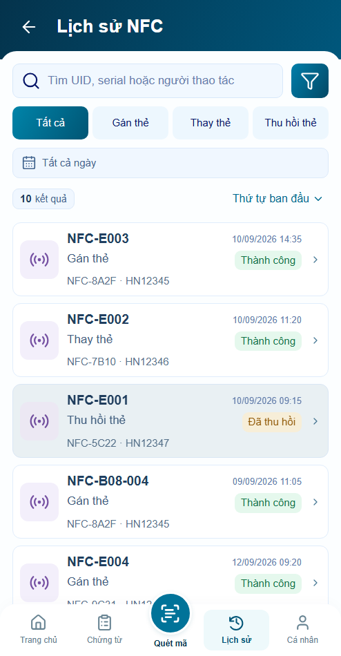
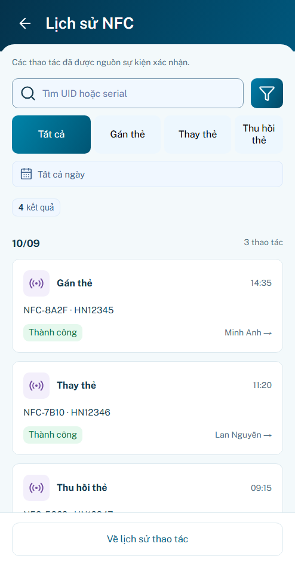
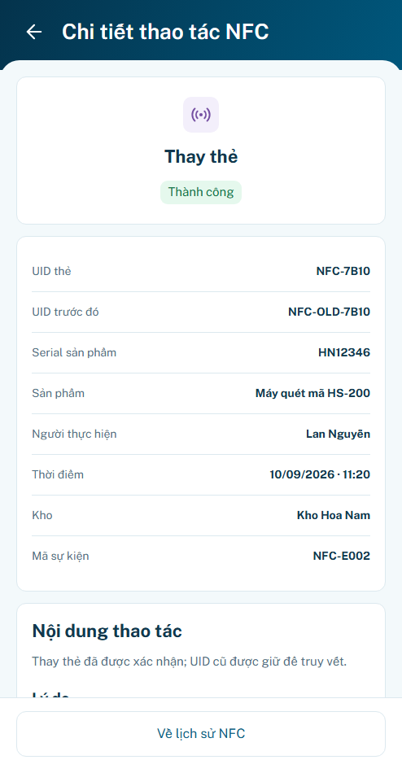
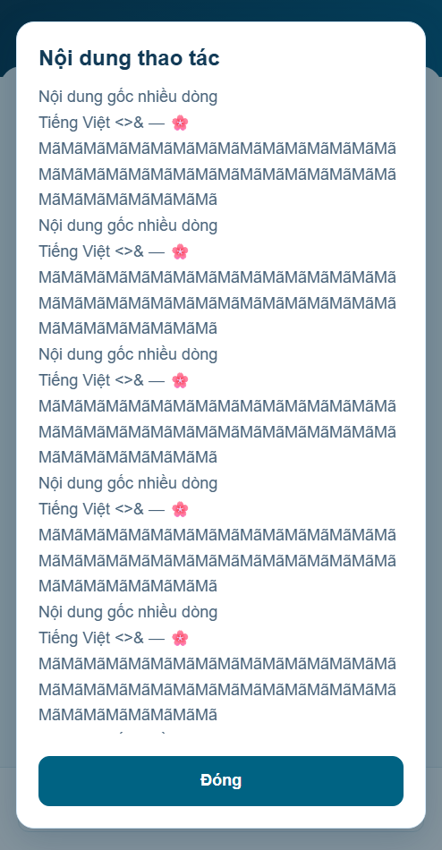
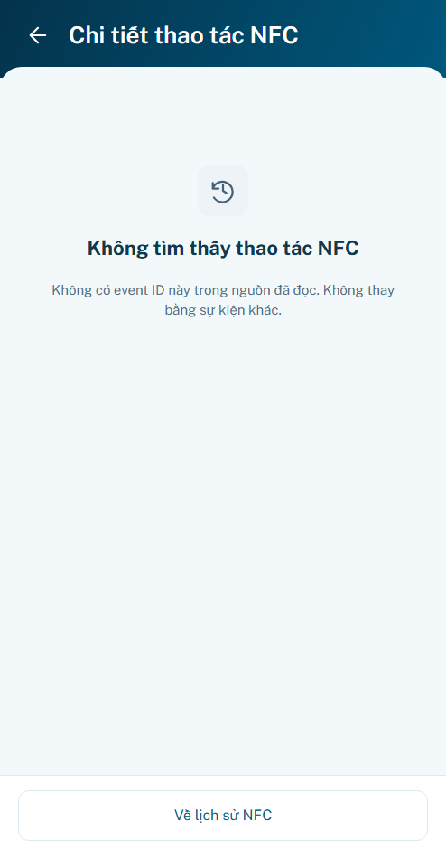

P22 r01 · Lịch sử thao tác & NFC
Đủ4panel; hình thức chờ bạn review. Behavior prototype đã kiểm; backend event chưa xác minh. P21 r03 tạm chốt, state đồng bộ bổ sung sau.
Mở preview · Báo cáo · Nguồn thiết kế
Đăng nhập minhanh / preview → tab Lịch sử → NFC. Chọn Mẫu B22 trong bộ mô phỏng P22 ngoài khung app để xem danh sách/chi tiết. Mặc định “Chưa có dữ liệu lịch sử” vì chưa nối nguồn event thật.
Điểm giữ nguyên / chuyển đổi
Home Xem tất cả → P12. Hub6entry giữ nguyên, không khôi phục shortcut phiếu dở. Frame494×950; footer Home/P03 không đổi. NFC chỉ đọc event theo ID; không có action gán/thay/thu hồi từ lịch sử.
Thêm bộ lọc ngày dùng picker chung; default Tất cả ngày, Apply mới lưu. Query/loại/scroll/focus giữ qua Back. UID trước đó/lý do từ nguồn, nội dung dài có reader. S01 MIGRATED; S02–S04 giữ ID.
S02 · Nhật ký NFC
Trước — generic P08

Sau — nguồn event riêng

S03 · Chi tiết đúng event
Thay thẻ có UID cũ/lý do và actor/product riêng:

S04 · Nguồn chưa khả dụng
Sau

Nhánh bổ sung trong phạm vi
Reader giữ nguyên dữ liệu

ID sai — không fallback

69 logic tests, 15 nhóm trình duyệt, 20 tổ hợp layout, 4 viewport footer. Đây không phải nghiệm thu backend/pixel-perfect.